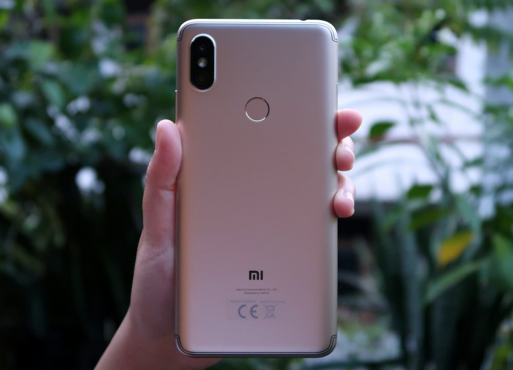

Xiaomi tergolong produsen yang sebelumnya jarang memperkenalkan smartphone dengan fitur selfie sebagai nilai jual utamanya. Tercatat, baru Redmi Note 5A yang punya kamera selfie menarik. Namun beberapa waktu yang lalu, Xiaomi meluncurkan Redmi S2 di Indonesia. Smartphone ini dibekali kamera depan 16 megapixel yang sudah didukung teknologi pixel binning dan fitur AI Beautify
DesainXiaomi tergolong produsen yang sebelumnya jarang memperkenalkan smartphone dengan fitur selfie sebagai nilai jual utamanya. Tercatat, baru Redmi Note 5A yang punya kamera selfie menarik. Namun beberapa waktu yang lalu, Xiaomi meluncurkan Redmi S2 di Indonesia. Smartphone ini dibekali kamera depan 16 megapixel yang sudah didukung teknologi pixel binning dan fitur AI Beautify
Sebagian orang, termasuk kami, akan menyebut ini sebagai kekurangan. Namun bisa jadi, Xiaomi mungkin hanya tidak ingin mengutak-atik apa yang ‘tidak rusak’, dan pastinya mau menekan harga agar tidak mahal. Intinya, main aman. Untungnya, meskipun secara penampilan tidak inovatif, kualitas rancang bangunnya tergolong amat baik di kelasnya. Solid dan sama sekali tidak tampak murah.
Selain bagian depannya yang didominasi layar 5,99 inci 18:9, cover belakang dari Redmi S2 adalah bagian yang membuatnya terlihat mirip dengan Redmi Note 5, apalagi jika melihat penempatan sensor sidik jari dan kamera belakang ganda vertikal.
Bedanya, garis antena Redmi S2 dipindahkan jauh lebih ke atas dan bawah. Perbedaan dengan Redmi Note 5 juga tampak pada posisi audio jack 3.5mm. Jika Redmi Note 5 terletak di bawah, Redmi S2 menempatkannya di sisi atas.
Dimensi Redmi S2 pun kurang lebih sama dengan Redmi Note 5. Karena layarnya cukup besar dan bezelnya juga tidak bisa dibilang tipis, Anda yang bertangan mungil, khususnya wanita, mungkin akan sedikit kesulitan mengoperasikannya dengan satu tangan. Untuk pria dewasa kami rasa tidak akan menemui masalah saat menggenggamnya

Satu hal yang kami sukai dari Redmi S2, Xiaomi kali ini menyediakan tiga slot yang terdiri dari Dual-SIM dan microSD. Tidak seperti Redmi Note 5 yang mengusung konsep hybrid, pada Redmi S2 Anda tidak perlu mengorbankan salah satu antara SIM-card 2 atau kartu memori.
Layar BesarXiaomi Redmi S2 dibekali layar IPS berukuran 5,99 inci 18:9. Sayangnya resolusi layarnya masih HD+, alias 1440 x 720 pixel, belum Full HD+ seperti Redmi Note 5. Walaupun demikian, menurut kami tampilan gambarnya masih lumayan tajam.
Untuk mendukung berbagai kebutuhan sehari-hari seperti browsing, media sosial, menonton video, hingga bermain games, layar Redmi S2 masih cukup memadai. Ukurannya yang besar membuat Anda bisa menikmati konten dengan lebih puas.
Soal tingkat kecerahan layarnya, Redmi S2 tergolong standar. Anda masih bisa melihat tampilan di layar dengan jelas saat berada di luar ruangan, dengan catatan, tidak di bawah sinar matahari yang sangat terik secara langsung.
Di sektor audio, Xiaomi tidak membenamkan fitur khusus untuk mendongkrak performanya. Kualitas audionya biasa saja dan masih mencukupi untuk sekadar menemani Anda menonton video di YouTube, IG Stories atau IG TV, serta bermain game
Android 8.1 Dengan MIUI 9.5Xiaomi sudah membekali Redmi S2 dengan sistem operasi terbaru, yakni MIUI Global 9.5 berbasis Android 8.1 Oreo. Pada dasarnya, user interface yang ditawarkan tidak jauh berbeda dengan versi sebelumnya.
Anda tidak akan menemukan app drawer. Untuk mengakses semua aplikasi, cukup geser halaman Home saja. Beberapa aplikasi bawaan khas Xiaomi masih tersedia, misalnya MIUI Forum, Mi Community, Mi Drop, Mi Remote, dan yang lainnya.
Fitur berguna yang kami sukai (dan mungkin disukai pula oleh para MiFans), Second Space, tetap tersedia. Bagi yang belum tahu, fitur ini memungkinkan Anda untuk membuat ruang yang terpisah dan rahasia untuk menyimpan file atau aplikasi apapun. Intinya, seperti memiliki dua smartphone.
Ada pula Dual Apps yang sesuai namanya berguna untuk membuat kloning dari aplikasi tertentu. Misalnya ketika Anda ingin menggunakan dua akun WhatsApp, Facebook, atau Instagram untuk keperluan yang berbeda. Soal kinerjanya, MIUI 9.5 terasa cukup gesit dan ringan.
Kamera selfie cukup baik di kelasnyaSeperti disebutkan di atas, kamera depan 16 megapixel sudah didukung teknologi pixel binning dan fitur AI Beautify. Yang lebih menarik, kamera depan Redmi S2 sudah dibekali mode HDR. Bahkan, ada pula AI Bokeh untuk menciptakan foto selfie dengan background blur yang menawan. Xiaomi mengklaim, AI Bokeh ini secara efektif mampu membedakan subjek dari latar belakang, bahkan mampu mengidentifikasi elemen seperti aksesori rambut.
Sementara untuk kamera belakang, Xiaomi menanamkan konfigurasi kamera ganda yang terdiri dari 12 megapixel + 5 megapixel. Sensor sekunder 5MP tersebut didedikasikan untuk menghasilkan foto dengan efek bokeh. Kamera belakang ini juga memiliki mode menarik seperti HHT untuk membantu pemotretan di kondisi cahaya temaram.
Lalu, bagaimana dengan hasil fotonya? Menurut kami, kamera depan Redmi S2 tergolong cukup baik di kelasnya. Di rentang harganya, ini adalah salah satu smartphone dengan kamera selfie yang bisa diandalkan. Ingat! DI RENTANG HARGANYA ALIAS 2,3 JUTAAN! Jangan membandingkan Redmi S2 dengan smartphone selfie populer yang bermain di level 4 jutaan!
Pada kondisi cahaya mencukupi, hasil jepretannya tajam dan reproduksi warnanya juga lumayan akurat. Mode HDR sangat membantu menghindari over exposure ketika Anda melakukan selfie dengan background yang terang. Bahkan, foto selfie bokeh di mode Portrait juga tidak buruk, meski hanya berbekal satu kamera saja.
Soal kamera belakangnya, menurut kami kualitasnya masih di bawah Redmi Note 5. Kinerjanya pun lebih lambat. Untuk pemotretan outdoor dengan cahaya yang baik, hasilnya masih termasuk oke di kelasnya. Foto bokehnya cukup rapi, meski terkadang masih kurang akurat memisahkan objek utama dengan latar yang di-blur. Untuk low-light? Tidak sebagus Redmi Note 5.
Performa lumayan dengan SoC lawasSayangnya, Redmi S2 tidak dibekali SoC yang sama. Xiaomi justru kembali menanamkan Snapdragon 625, yang bisa dibilang sudah termasuk produk lawas. SoC ini dipasangkan dengan RAM 3 GB dan memori internal 32 GB.
Performanya memang lumayan. Sebagian dari Anda tentunya sudah tidak asing dengan kinerja yang ditawarkan Snapdragon 625, mengingat SoC ini sangat mudah ditemui di berbagai smartphone kelas menengah selama setahun ke belakang.
Untuk gaming jelas masih memungkinkan. Mobile Legends dan PUBG Mobile masih bisa dijalankan dengan cukup lancar. Namun jika dibandingkan dengan Snapdragon 636, jelas performa Redmi S2 menjadi kurang menarik. Apalagi, perbedaan harga antara Redmi S2 dan Redmi Note 5 tidak jauh.
Untuk lebih menggambarkan performa Redmi S2, berikut kami sajikan beberapa hasil pengujian menggunakan aplikasi benchmark.
Baterai ‘hanya’ 3080 mAhBukan cuma berbeda SoC, Redmi S2 juga tidak dibekali kapasitas baterai yang sama dengan Redmi Note 5. Bila Redmi Note 5 memiliki baterai 4000 mAh, Redmi S2 hanya 3080 mAh.
Tapi bukan berarti daya tahan baterainya jauh lebih rendah. Perlu diingat, Snapdragon 625 adalah SoC yang hemat daya. Selain itu, resolusi layar smartphone ini juga masih HD+. Secara teori, harusnya daya tahan baterai Redmi S2 tetap mumpuni.
Kenyataannya memang demikian. Redmi S2 bisa menyala sejak pagi hingga malam hari dengan gaya pemakaian normal. Hasil pengujian menggunakan aplikasi PC Mark (Work 2.0 battery life) juga cukup memuaskan:
KesimpulanKesimpulan kami tidak jauh berbeda dengan yang kami tuangkan di artikel Hands-On beberapa waktu yang lalu. Perbedaan harga yang tidak terlalu signifikan dari Redmi Note 5 sedikit menahan hasrat kami untuk merekomendasikan smartphone ini.
Xiaomi Redmi S2 dibanderol Rp2.399.000, sementara Redmi Note 5 Rp.2.499.000. Banyak keunggulan yang membuat Redmi Note 5 lebih menarik, misalnya Snapdragon 636, resolusi layar FullHD+, kamera belakang ganda yang lebih mumpuni, dan baterai yang lebih besar, 4000 mAh.
Lain cerita jika Anda penggemar selfie. Untuk Anda yang memiliki budget 2 jutaan, Redmi S2 adalah opsi yang menarik untuk Anda. Kamera depannya cukup mumpuni di kelasnya. Tapi kembali kami ingatkan, jangan Anda bandingkan dengan smartphone selfie dari yang bermain di harga 4 jutaan ya!
keunggulan